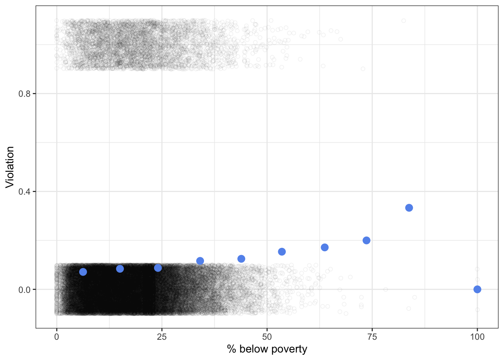
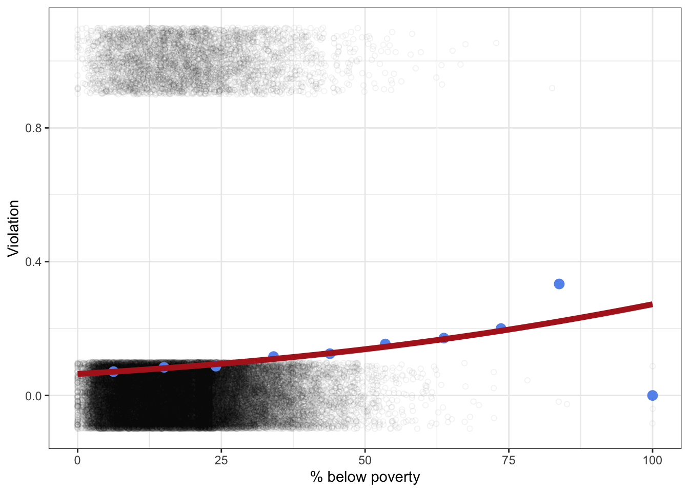
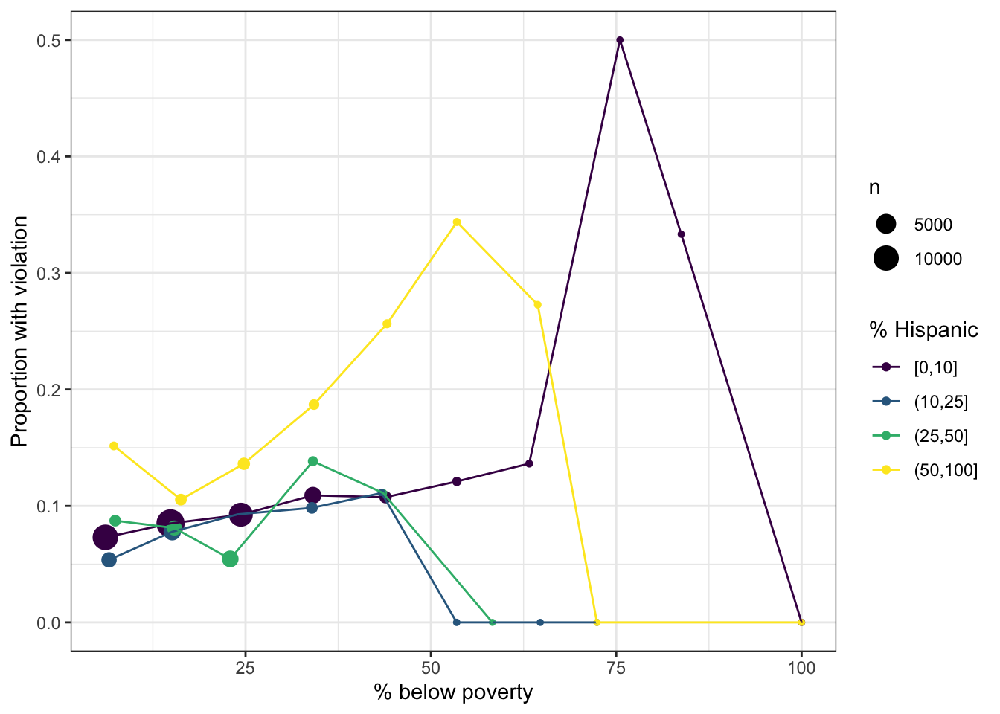
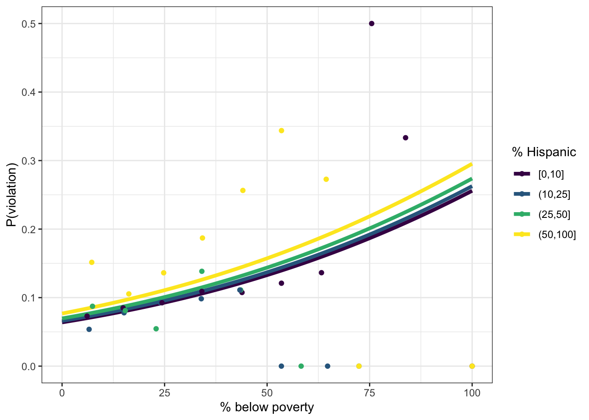
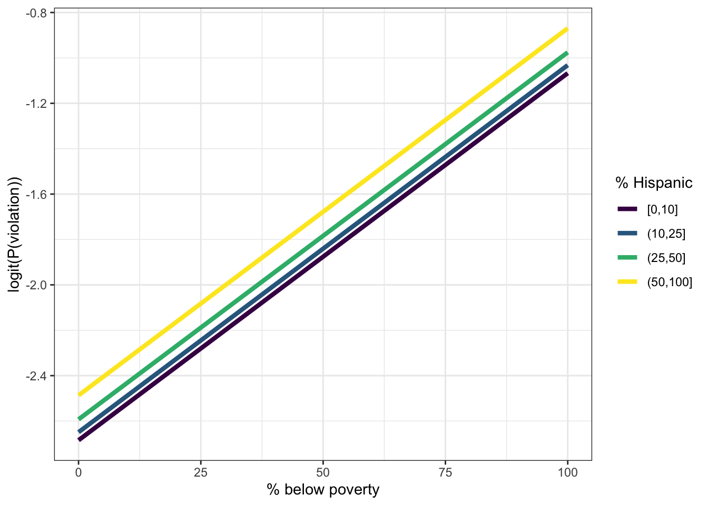
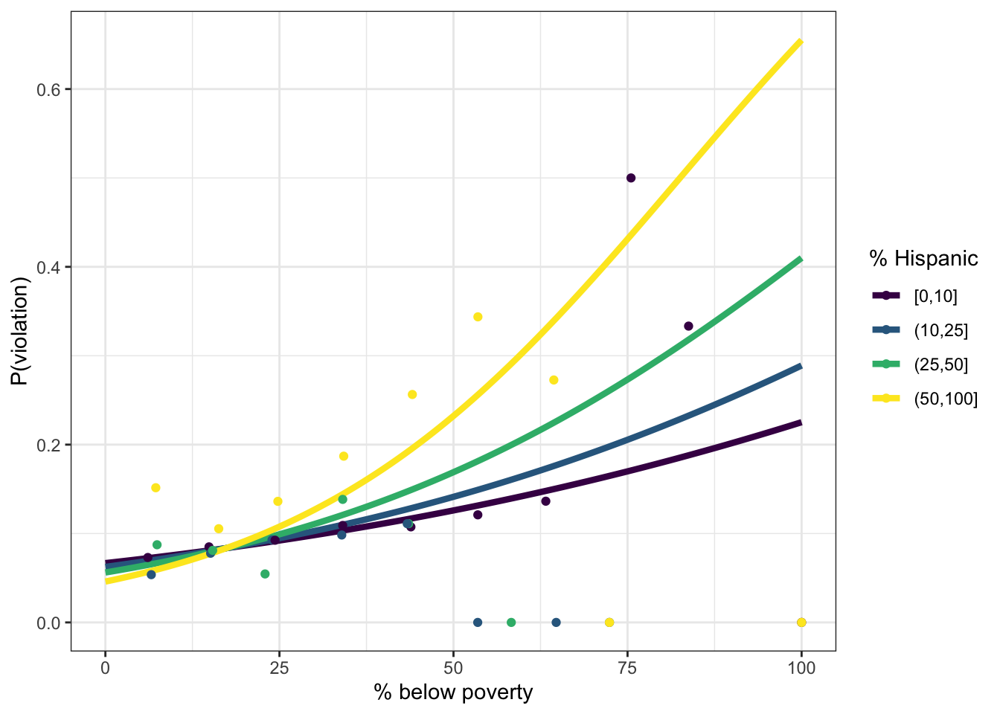

library(tidyverse)
set.seed(222)
theme_set(theme_bw())Overview
The Safe Drinking Water Act (SDWA) sets health standards for public water systems in the US. Are violations of those standards distributed equally across communities? Switzer and Teodoro (2017) found that the answer depends on both class and race: the relationship between poverty and violations was stronger in communities with more Hispanic residents.
Each row is one public water system in one year.
- pwsid: public water system ID
- pwsname: public water system name
- pctpov: percent of households below the poverty line
- pcthisp: percent of residents who are Hispanic
- violation: whether the system had a health-based SDWA violation (
TRUE/FALSE)
Today you’ll build up to Switzer and Teodoro’s model in three steps. Each step follows the same recipe: visualize, fit, predict.
- Class only:
violation ~ pctpov - Class and race:
violation ~ pctpov + pcthisp - Class, race, and their interaction:
violation ~ pctpov * pcthisp
# This path works on the course website - replace it with the Workbench path when rendering
drinking_water <- read_csv("../data/drinking_water.csv") |>
select(pwsid, pwsname, pctpov, pcthisp, violation)Part 1: Class
Visualize
With a binary response, it’s hard to see a trend in the raw data. Instead, we’ll group water systems into bins of pctpov and calculate the proportion with a violation in each bin.
Tip
cut() converts a continuous variable into bins. The breaks argument sets the edges of the bins. By default, the lowest edge is excluded from the first bin, so a value of exactly 0 would become NA. Set include.lowest = TRUE to include it.
Create a new column, pctpov_bin, with 10-point bins of pctpov (0-10, 10-20, …, 90-100).
drinking_water <- drinking_water |>
mutate(
pctpov_bin = cut(
pctpov,
breaks = seq(0, 100, by = 10),
include.lowest = TRUE
)
)What proportion of water systems had a violation in each poverty bin?
pov_summary <- drinking_water |>
summarize(
pctpov = mean(pctpov), # average pctpov in the bin
prop_violation = mean(violation),
.by = pctpov_bin
)
pov_summary# A tibble: 10 × 3
pctpov_bin pctpov prop_violation
<fct> <dbl> <dbl>
1 [0,10] 6.25 0.0713
2 (10,20] 15.0 0.0841
3 (20,30] 24.0 0.0876
4 (40,50] 43.9 0.125
5 (30,40] 34.1 0.116
6 (50,60] 53.5 0.154
7 (60,70] 63.7 0.171
8 (90,100] 100 0
9 (80,90] 83.8 0.333
10 (70,80] 73.6 0.2 Plot the raw data (jittered) with the binned proportions on top.
Tip
There are over 50,000 rows! Use a small alpha so the points don’t become a solid block.
ggplot(drinking_water, aes(x = pctpov, y = as.numeric(violation))) +
geom_point(
position = position_jitter(height = 0.1),
shape = 21,
alpha = 0.05
) +
geom_point(
aes(y = prop_violation),
data = pov_summary,
size = 3,
color = "cornflowerblue"
) +
labs(x = "% below poverty", y = "Violation")
Describe the relationship between poverty and violations.
Answer: Violations become more common as poverty increases. About 7% of water systems in the 0-10% poverty bin had a violation, compared to about 15% in the 50-60% bin. Very few water systems serve communities with more than 60% poverty, so the proportions in those bins are based on tiny samples (e.g., only 3 systems in the 90-100% bin) and are unreliable.
Fit
Our model in statistical notation is:
\[ \begin{aligned} \text{Violation} &\sim \text{Bernoulli}(p) \\ \text{logit}(p) &= \beta_0 + \beta_1 \text{PctPov} \end{aligned} \]
pov_glm <- glm(
violation ~ pctpov,
family = binomial(link = "logit"),
data = drinking_water
)
summary(pov_glm)
Call:
glm(formula = violation ~ pctpov, family = binomial(link = "logit"),
data = drinking_water)
Coefficients:
Estimate Std. Error z value Pr(>|z|)
(Intercept) -2.678936 0.032759 -81.78 <2e-16 ***
pctpov 0.016980 0.001512 11.23 <2e-16 ***
---
Signif. codes: 0 '***' 0.001 '**' 0.01 '*' 0.05 '.' 0.1 ' ' 1
(Dispersion parameter for binomial family taken to be 1)
Null deviance: 30509 on 52179 degrees of freedom
Residual deviance: 30387 on 52178 degrees of freedom
AIC: 30391
Number of Fisher Scoring iterations: 5Interpret the pctpov coefficient in a sentence. Is it significantly different from 0?
Answer: Each additional percentage point of households below the poverty line increases the log odds of a violation by 0.017. Yes, it’s significantly different from 0 (p < 0.001).
Predict
Create a prediction grid covering the range of pctpov, then use predict() to get the probability of a violation.
Tip
expand_grid() creates a data frame with every combination of the values you give it. With one predictor, it works just like tibble(). With more than one, it saves you from typing out every combination by hand. For example:
expand_grid(x = c(1, 2), y = c("a", "b", "c"))
#> # A tibble: 6 × 2
#> x y
#> <dbl> <chr>
#> 1 1 a
#> 2 1 b
#> 3 1 c
#> 4 2 a
#> 5 2 b
#> 6 2 cYou’ll need this in Parts 2 and 3, when the prediction grid has two predictors.
pov_grid <- expand_grid(
pctpov = seq(0, 100, by = 1)
)
pov_grid$p_violation <- predict(
pov_glm,
newdata = pov_grid,
type = "response"
)Overlay the predictions on your figure from above.
ggplot(drinking_water, aes(x = pctpov, y = as.numeric(violation))) +
geom_point(
position = position_jitter(height = 0.1),
shape = 21,
alpha = 0.05
) +
geom_point(
aes(y = prop_violation),
data = pov_summary,
size = 3,
color = "cornflowerblue"
) +
geom_line(
aes(y = p_violation),
data = pov_grid,
linewidth = 2,
color = "firebrick"
) +
labs(x = "% below poverty", y = "Violation")
What is the predicted probability of a violation when 5% of households are below the poverty line? When 50% are?
predict(
pov_glm,
newdata = tibble(pctpov = c(5, 50)),
type = "response"
) 1 2
0.06952318 0.13824432 Answer: About 7% when 5% of households are below the poverty line, and about 14% when 50% are. The probability of a violation roughly doubles.
Part 2: Class and race
Visualize
Now we have two predictors. One way to visualize them both: put pctpov on the x-axis and use color for pcthisp. Ten bins of pcthisp would be too many colors, so bin pcthisp more coarsely.
Create a new column, pcthisp_bin, with four bins: 0-10, 10-25, 25-50, and 50-100.
Tip
Bins don’t have to be the same width! Most water systems serve communities with few Hispanic residents (check the median of pcthisp), so narrower bins at the low end keep the bins from being too lopsided.
pcthisp_breaks <- c(0, 10, 25, 50, 100)
drinking_water <- drinking_water |>
mutate(
pcthisp_bin = cut(pcthisp, breaks = pcthisp_breaks, include.lowest = TRUE)
)What proportion of water systems had a violation in each combination of poverty and Hispanic bins?
pov_hisp_summary <- drinking_water |>
summarize(
pctpov = mean(pctpov),
prop_violation = mean(violation),
n = n(),
.by = c(pctpov_bin, pcthisp_bin)
)ggplot(
pov_hisp_summary,
aes(x = pctpov, y = prop_violation, color = pcthisp_bin)
) +
geom_point(aes(size = n)) +
geom_line() +
scale_color_viridis_d("% Hispanic") +
labs(x = "% below poverty", y = "Proportion with violation")
Does the relationship between poverty and violations look the same for every level of pcthisp?
Answer: No. In communities that are 50-100% Hispanic, violations rise steeply with poverty, from about 10% in the 10-20% poverty bin to about 34% in the 50-60% bin. In communities that are 0-10% Hispanic, violations rise much more gradually, from about 7% to about 12% across the same range. (Ignore the bins with only a handful of water systems: the small points that jump to 0 or 0.5.)
Fit
\[ \begin{aligned} \text{Violation} &\sim \text{Bernoulli}(p) \\ \text{logit}(p) &= \beta_0 + \beta_1 \text{PctPov} + \beta_2 \text{PctHisp} \end{aligned} \]
additive_glm <- glm(
violation ~ pctpov + pcthisp,
family = binomial(link = "logit"),
data = drinking_water
)
summary(additive_glm)
Call:
glm(formula = violation ~ pctpov + pcthisp, family = binomial(link = "logit"),
data = drinking_water)
Coefficients:
Estimate Std. Error z value Pr(>|z|)
(Intercept) -2.6987363 0.0333499 -80.922 < 2e-16 ***
pctpov 0.0161734 0.0015381 10.515 < 2e-16 ***
pcthisp 0.0028257 0.0008412 3.359 0.000782 ***
---
Signif. codes: 0 '***' 0.001 '**' 0.01 '*' 0.05 '.' 0.1 ' ' 1
(Dispersion parameter for binomial family taken to be 1)
Null deviance: 30509 on 52179 degrees of freedom
Residual deviance: 30376 on 52177 degrees of freedom
AIC: 30382
Number of Fisher Scoring iterations: 5Interpret the pctpov and pcthisp coefficients in a sentence each.
Answer: Holding % Hispanic constant, each additional percentage point of households below the poverty line increases the log odds of a violation by 0.016. Holding % below poverty constant, each additional percentage point of Hispanic residents increases the log odds of a violation by 0.003. Both are significantly different from 0 (p < 0.001).
Predict
Now the prediction grid needs combinations of both predictors. That’s why we use expand_grid(): it creates every combination of the values you give it.
additive_grid <- expand_grid(
pctpov = seq(0, 100, by = 1),
pcthisp = c(5, 17.5, 37.5, 75)
) |>
mutate(
pcthisp_bin = cut(pcthisp, breaks = pcthisp_breaks, include.lowest = TRUE)
)
additive_grid$p_violation <- predict(
additive_glm,
newdata = additive_grid,
type = "response"
)Plot the predictions with pctpov on the x-axis and pcthisp as color. Add your binned proportions from above.
ggplot(
additive_grid,
aes(x = pctpov, y = p_violation, color = pcthisp_bin)
) +
geom_line(linewidth = 1.5) +
geom_point(aes(y = prop_violation), data = pov_hisp_summary) +
scale_color_viridis_d("% Hispanic") +
labs(x = "% below poverty", y = "P(violation)")
The additive model has no interaction term. So why aren’t the lines parallel?
To find out, use predict() with type = "link" to get the predictions on the link scale (log odds) instead of the response scale (probability). Then plot the log odds the same way you plotted the probabilities, without the binned proportions.
additive_grid$logodds_violation <- predict(
additive_glm,
newdata = additive_grid,
type = "link"
)
ggplot(
additive_grid,
aes(x = pctpov, y = logodds_violation, color = pcthisp_bin)
) +
geom_line(linewidth = 1.5) +
scale_color_viridis_d("% Hispanic") +
labs(x = "% below poverty", y = "logit(P(violation))")
Answer: On the link scale, the lines are parallel: the model is additive in log odds, so % Hispanic shifts the intercept without changing the slope for poverty. But the first figure was on the response (probability) scale. The inverse logit function is nonlinear, so the same change in log odds produces a bigger change in probability when the baseline probability is higher.
Does the additive model capture the patterns you saw in the binned proportions?
Answer: Not very well. The additive model’s lines are nearly parallel and close together: % Hispanic shifts the probability of a violation up a little, but the slope with respect to poverty is about the same for every level of % Hispanic. The binned proportions showed a much steeper slope in the most Hispanic communities.
Part 3: Class, race, and their interaction
Visualize
Look back at your figure of binned proportions from Part 2. If there were an interaction between class and race, what would it look like in that figure?
Answer: The lines would have different slopes. An interaction means the effect of poverty depends on % Hispanic. That’s what the binned proportions show: the line for 50-100% Hispanic communities is steeper than the others.
Fit
\[ \begin{aligned} \text{Violation} &\sim \text{Bernoulli}(p) \\ \text{logit}(p) &= \beta_0 + \beta_1 \text{PctPov} + \beta_2 \text{PctHisp} + \beta_3 \text{PctPov} \times \text{PctHisp} \end{aligned} \]
interaction_glm <- glm(
violation ~ pctpov * pcthisp,
family = binomial(link = "logit"),
data = drinking_water
)
summary(interaction_glm)
Call:
glm(formula = violation ~ pctpov * pcthisp, family = binomial(link = "logit"),
data = drinking_water)
Coefficients:
Estimate Std. Error z value Pr(>|z|)
(Intercept) -2.610e+00 3.787e-02 -68.917 < 2e-16 ***
pctpov 1.241e-02 1.734e-03 7.154 8.44e-13 ***
pcthisp -5.636e-03 1.976e-03 -2.853 0.00433 **
pctpov:pcthisp 3.246e-04 6.696e-05 4.847 1.25e-06 ***
---
Signif. codes: 0 '***' 0.001 '**' 0.01 '*' 0.05 '.' 0.1 ' ' 1
(Dispersion parameter for binomial family taken to be 1)
Null deviance: 30509 on 52179 degrees of freedom
Residual deviance: 30353 on 52176 degrees of freedom
AIC: 30361
Number of Fisher Scoring iterations: 5Is the interaction coefficient significantly different from 0? What does its sign mean?
Answer: Yes (p < 0.001). The interaction coefficient is positive (0.0003), so the effect of poverty on the log odds of a violation gets stronger as % Hispanic increases. The slope for poverty is \(\beta_1 + \beta_3 \text{PctHisp}\): about 0.012 when % Hispanic is 0, and about 0.037 when it’s 75. Notice that the pcthisp coefficient is now negative: it’s the effect of % Hispanic when poverty is 0, which isn’t the same thing it measured in the additive model.
Predict
interaction_grid <- expand_grid(
pctpov = seq(0, 100, by = 1),
pcthisp = c(5, 17.5, 37.5, 75)
) |>
mutate(
pcthisp_bin = cut(pcthisp, breaks = pcthisp_breaks, include.lowest = TRUE)
)
interaction_grid$p_violation <- predict(
interaction_glm,
newdata = interaction_grid,
type = "response"
)ggplot(
interaction_grid,
aes(x = pctpov, y = p_violation, color = pcthisp_bin)
) +
geom_line(linewidth = 1.5) +
geom_point(aes(y = prop_violation), data = pov_hisp_summary) +
scale_color_viridis_d("% Hispanic") +
labs(x = "% below poverty", y = "P(violation)")
Compare the predicted probability of a violation in a water system where 50% of households are below the poverty line and 0% of residents are Hispanic vs. one where 50% are below the poverty line and 75% are Hispanic. How do the additive and interaction models differ?
comparison_grid <- expand_grid(
pctpov = 50,
pcthisp = c(0, 75)
)
comparison_grid$p_additive <- predict(
additive_glm,
newdata = comparison_grid,
type = "response"
)
comparison_grid$p_interaction <- predict(
interaction_glm,
newdata = comparison_grid,
type = "response"
)
comparison_grid# A tibble: 2 × 4
pctpov pcthisp p_additive p_interaction
<dbl> <dbl> <dbl> <dbl>
1 50 0 0.131 0.120
2 50 75 0.157 0.232Answer: The additive model predicts a modest difference: 13% for the community with no Hispanic residents vs. 16% for the community that is 75% Hispanic. The interaction model predicts the risk nearly doubles: 12% vs. 23%. By forcing the effect of poverty to be the same in every community, the additive model understates the risk faced by poor, majority-Hispanic communities.
References
Switzer, D., & Teodoro, M. P. (2017). The color of drinking water: Class, race, ethnicity, and Safe Drinking Water Act compliance. Journal AWWA, 109(9), 40–45. https://doi.org/10.5942/jawwa.2017.109.0128